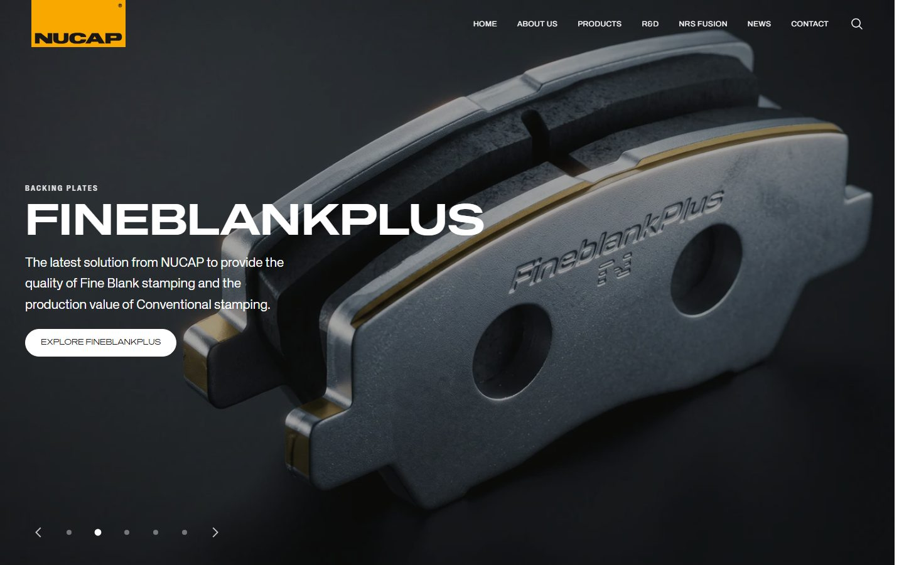
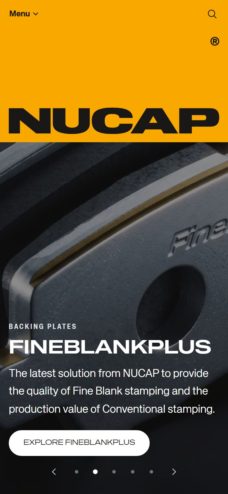
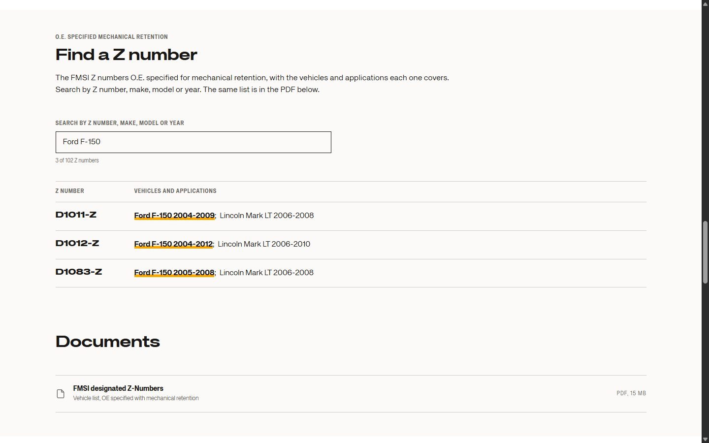

From WordPress to a modern brand platform
NUCAP is a Toronto-founded brake-technology company, in business since 1994, with brands sold around the world. Its website ran on WordPress and no longer matched a company-wide rebrand. We rebuilt it as a brand and lead-generation platform with practical tools for distributors, then moved everything across without giving up years of search rankings.
- Client
- NUCAP
- Industry
- Automotive · brake technology
- Platform
- Shopify · custom theme
- Timeline
- Mar–Nov 2026
- Status
- Live


A brand platform, not a parts shop
We started from a premium store theme, removed everything built for checkout and old page-builder clutter, and replaced it with a library of brand sections that tell NUCAP's story: three decades of history, the family of brands and the technology behind them.
- 35 custom sections: history timeline, principles, brand architecture, comparison tables, galleries and quotes
- The new brand typeface built in as a web font, with matching colour and spacing rules
- Interactive charts embedded for data-heavy stories
- 13 reusable blocks for mixing and matching inside pages

Practical tools for distributors and buyers
Most visitors come to NUCAP to look something up. We gave the site the tools they need, all managed from the same admin the marketing team already uses.
- An application lookup tool for finding the right product
- Reference pages for part numbers, plus a searchable document library
- Careers listings with individual job pages
- News and blog sections, plus a new contact form

Moving platforms without losing search
A new site is worthless if old links break and rankings disappear. We audited the WordPress site first, mapped every page that mattered to its new home, and wrote small tools to move content and search metadata across in bulk.
- SEO audit of the existing site before anything moved
- Redirect map covering 48 old addresses
- Scripted import of existing news articles
- Page titles and search descriptions uploaded in bulk

A site the team can grow with
NUCAP now runs its brand site, tools and content from one admin, on one platform instead of a separate WordPress install.